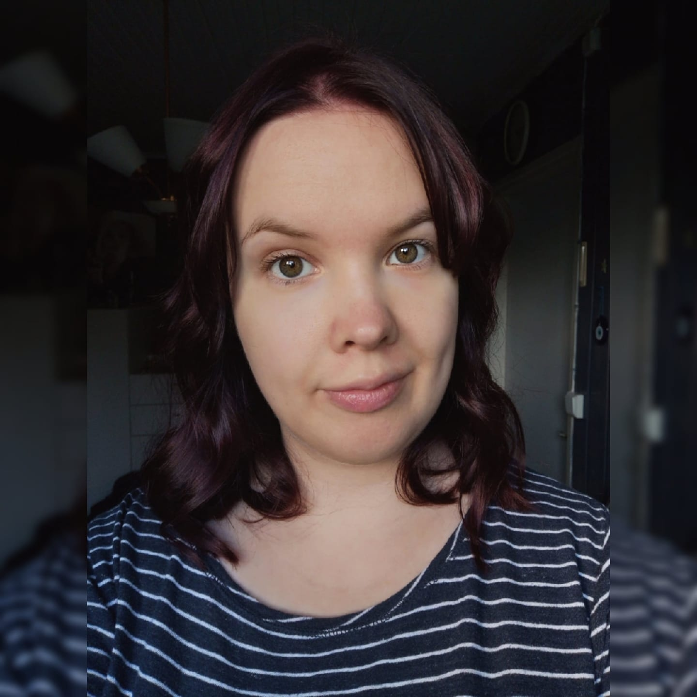

Marika Matalamäki
Tuleva ohjelmistokehittäjä
ja media-alan moniosaaja
Tietoa minusta
Olen Marika Matalamäki, tieto- ja viestintätekniikan polkuopiskelija Jyväskylän ammattikorkeakoulusta.
Iältäni olen 31-vuotias. Olen alkujani kotoisin Etelä-Pohjanmaalta, mutta olen asunut Jyväskylässä
jo yli 7 vuotta.
Päädyin opiskelemaan tieto- ja viestintätekniikkaa oman mielenkiinnon, koulutustaustan sekä harrastusteni innoittamana. Olen oppinut polkuopintojeni aikana esimerkiksi ohjelmointia, web-tekniikkaa, projektitoimintaa ja tietokantojen tekemistä. Haaveena olisi mahdollisesti hakeutua tulevaisuudessa opiskelemaan ammatillisen opettajan pätevyys. Videokuvauksen, grafiikan ja nettisivujen teon opetus kiinnostaisivat myös tulevaisuudessa.
Vapaa-ajalla teen vapaaehtoistyötä ehkäisevän päihdetyön järjestössä. Järjestän ja suunnittelen muiden vapaaehtoisten kanssa päihteettömiä tapahtumia sekä muuta vapaa-ajan tekemistä nuorille ja nuorille aikuisille. Harrastan myös musiikkia vapaa-ajallani; laulan ja soitan monia erilaisia soittimia.
Koulutus ja työkokemus
Koulutus
2020-
Tieto- ja viestintätekniikka, insinööri
Jyväskylän ammattikorkeakoulu
ICT-alan opintoja ammattikorkeakoulussa
2015-2016
Koulunkäynnin ja aamu- ja iltapäivätoiminnan ohjaaja
Jyväskylän aikuisopisto
Koulunkäynnin ja aamu- ja iltapäivätoiminnan ohjauksen ammattitutkinto.
2011-2014
Suupohjan ammatti-instituutti, kauppaoppilaitos, Kauhajoki
Audiovisuaalisen viestinnän perustutkinto
Työkokemus
01/2019- 03/2020
Kahvilatyöntekijä/viestintä- ja markkinointiassistentti
Miriam's, Jyväskylä
Kahvilan asiakaspalvelutyöt ja viestinnän ja markkinoinnin työtehtäviä
työkokeiluna.
05/2018
Viestintäassistentti/Ohjaamolähettiläs
Ohjaamo Jyväskylä
Pieniä viestinnän tehtäviä ja Ohjaamon toiminnan esittelemistä nuorille.
06/2016-08/2016
Mediatoimittaja
Yle Jyväskylä
Videokuvaus, sometus, editointi ja valokuvaus.
Portfolio ja oma osaaminen
Tässä erilaisia työnäytteitä
Tässä yksi video, mihin tein värimäärittelyä.
Projektitoiminnan kurssin tehtävä
Tässä tekemäni projektitoinnan kurssille tekemäni nettisivut. Nettisivut tein gitlabin avulla.
Linkki projektitoiminnan tehtävään
Web-tekniikan harjoitustyö 2020
Tässä polkuopinnoissa tekemäni web-tekniikan harjoitustyö vuodelta 2020
Linkki harjoitustyöhön 2020